自带的 demo 中依赖如下两个插件
体验方式一：直接体验可执行程序，下载如下压缩包并解压运行，配合硬件设备进行体验。
点击下载：SDK_V0217_2.rar (42M)体验方式二：在开发环境下，体验带源码的 SDK 应用，请按如下步骤操作
请从版本历史章节中下载并使用
版本号说明如：sdk_0.1.2_3.unitypackage
0是大版本号，主要代码结构或使用方式不变的情况下，大版本号不变
1是小版本号，代码重构、修复bug、小的体验的修改更新该版本号
2是小版本号，代码重构、修复bug、小的体验的修改更新该版本号
3是SVN版本号，这个版本号记录下了SVN的提交记录中的版本号
下载后，在 Unity 中把文件拖放进 Project 面板，并选择所有文件导入即可。目前，本插件依赖 Unity Asset Store 中的一个蓝牙插件，开发时候需要导入这个插件。如果项目中已经有，无需导入和蓝牙插件有关的内容。
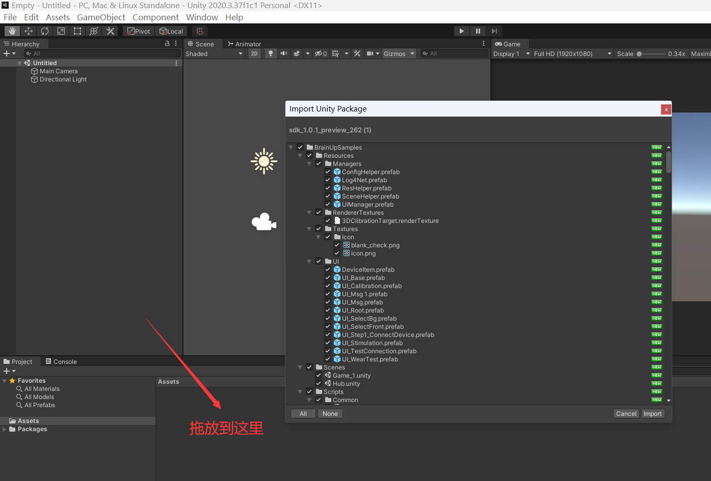导入后，文件夹结构如下图所示：
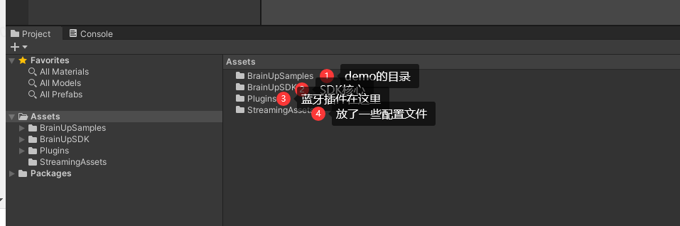打开 Hub 场景，然后把这个场景加入到 BuildSettings 中的场景列表中去。
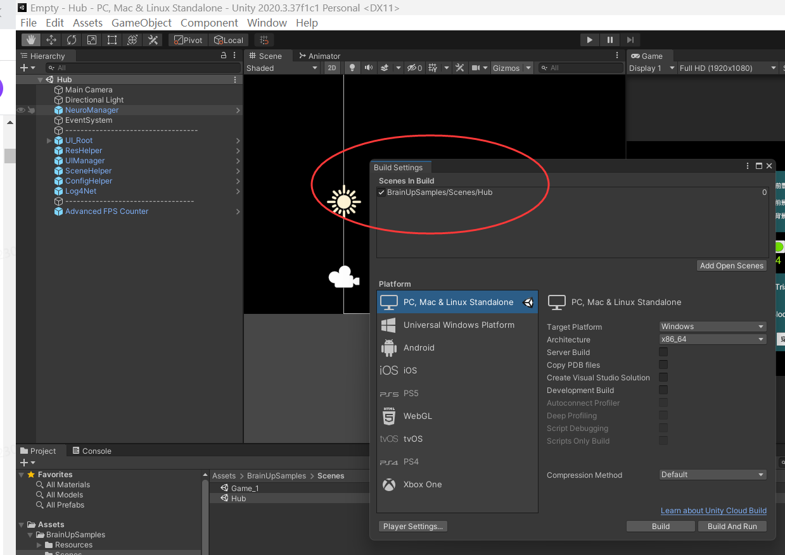短按设备上的电源键，直至开机指示灯亮起并闪烁。
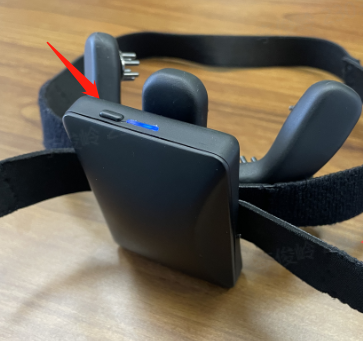把设备套在头上，并调整头箍松紧，调整电极到合适位置，如下图所示。
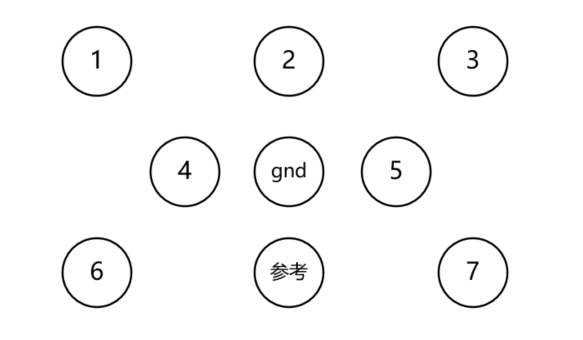图 3.2.1：电极位置示意图，当正确佩戴后，从后脑勺往前看时候电极的位置。
图 2.2.2：佩戴期效果图。
在 Unity 中，点击 Play 运行场景。场景运行后，可以看到一个设置页面，这里有完整的设置。点击扫描即可进行设备扫描。待扫描出结果后，选中要连接的设备，点击连接，待连接旁的方块儿变绿后，即连接成功。
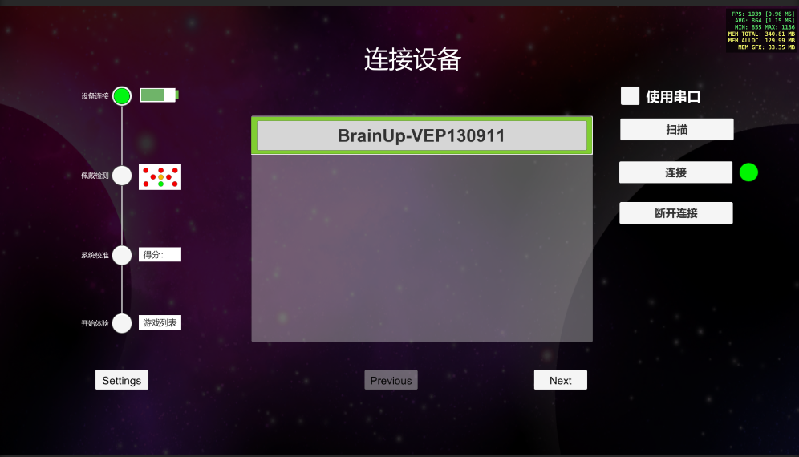连接成功后点击下一步按钮，可以打开穿戴检测。待编号 1~7 的指示灯变绿后，即是穿戴良好。可以进行体验了。
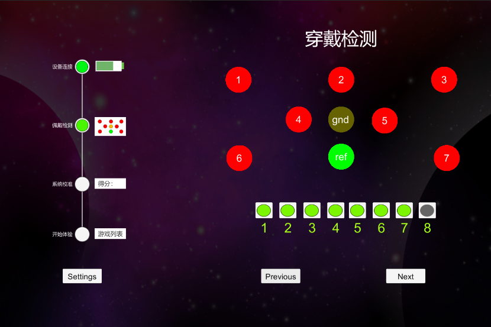穿戴检测通过后即可开始设备校准。校准后，才能开始体验。校准得分越高，体验越好。进入校准页面后，点击开始，屏幕上的目标会开始闪烁，每次闪烁中间有 1~2 秒的间隔。约 30~40 秒之后，会出来校准结果
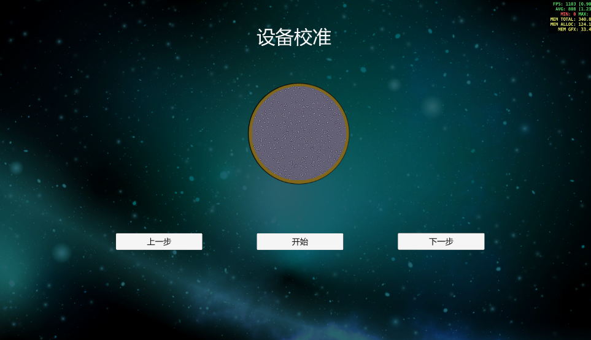校准结束后，可以点击下一步进入体验。在体验列表中点击体验列表中想要体验的项目，即可进行开始体验。
NReal 设备上有 IoT 的 Demo 以及小怪兽游戏可以体验。
版本要求：适用于 sdk_1.1.1_preview_326 以下的版本
开发工具安装：
安装 Unity 时，尽量使用 UntiyHub 软件安装，官方提供的有下载。UntiyHub 同时需要进行 Untiy 账号的注册，并激活个人版证书。Unity 和 VisualStudio 都安装好后，打开 Untiy 中菜单 Editor > Preferences 菜单，并在 External Tab 页中的 External Script Tool 项选择刚刚安装的 Visual Studio 版本。
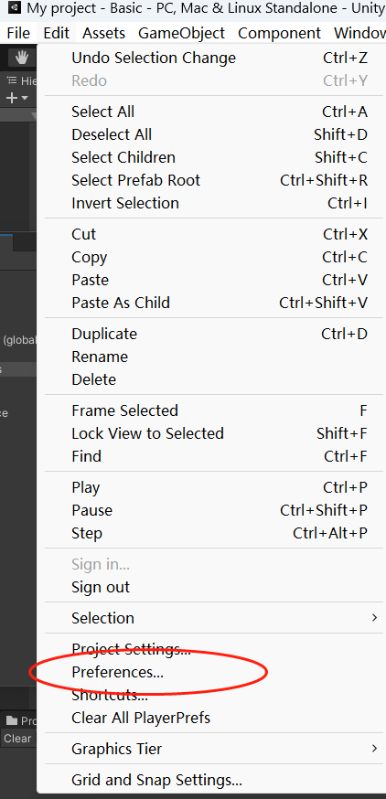请从第三章节版本历史中下载并使用
按照上一个章节的指引，正确佩戴好设备，并且通过佩戴检测。
使用 SDK 需要经过如下步骤:
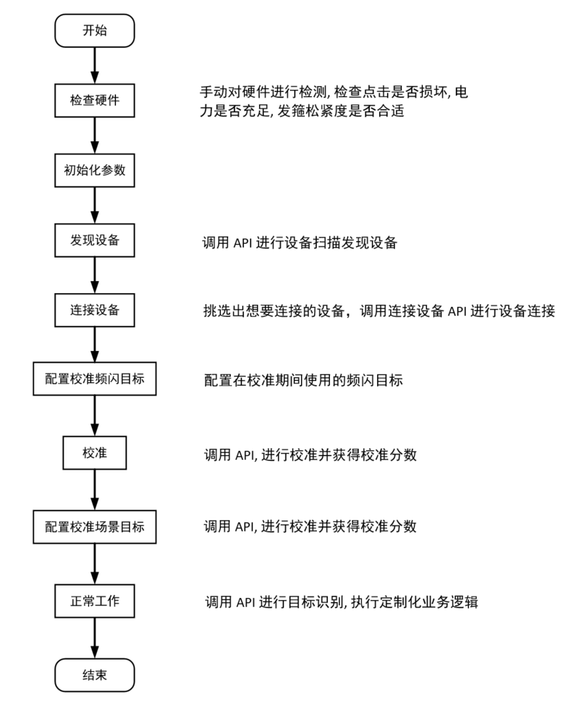NeuroManager 以 prefab 的方式提供，上面存储的有默认的一些参数可供使用。可以直接在 NeuroManager 的检视面板中进行属性的修改。
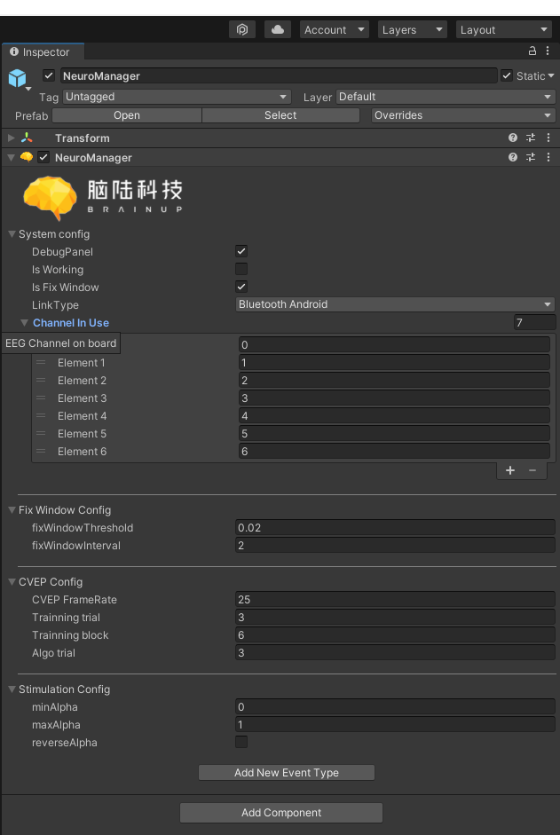进行设备扫描之前，首先选择通讯方式，比如是安卓平台则选择 Bluetooth Android; 然后进行下一步操作。
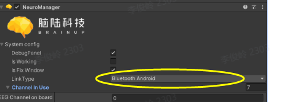调用 NeuroManager.FindDevice，可以查找周边的蓝牙 BCI 设备，并统计到回调函数的设备列表中去。这个函数是一个可等待的异步函数。
如果程序运行结束，不想再使用这个设备，就可以调用断开连接方法使设备断开连接。
穿戴检测可以直接体现设备在头上的佩戴情况。如果佩戴不好，则SDK对频闪目标的识别结果可能会不准确。NeuroManager.Instance.GetWearTestStat() 方法会获取到电极的佩戴情况，返回值是 int 数组，对应八个电极，0是接触良好，1是接触不良。
有两种方法可以创建频闪目标，第一种是通过菜单进行频闪目标自动创建，打开菜单 BrainTouch => Create => NeuroTag(uUGUI)，即可在层次面板选中的 GameObject 对象下面创建一个 NeuroTag 节点。
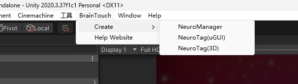另外一种方式就是直接在模型上面绑定 NeuroTag 脚本组件进行创建。并手动绑定 StimulationRenderers
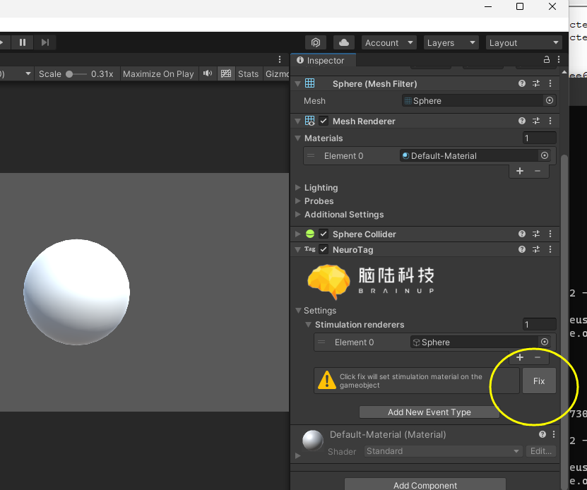对应的组件绑定后，如果选取的 Shader 不是频闪专用的 Shader，那么会提示 Fix。Fix 后会绑定一个可以直接使用的材质球到这个频闪对象上面。之后就可以进行自定义的修改了。
注意这个 NeuroTag 的属性上的事件绑定。OnStartStimulation() 是开始闪烁事件，开始闪烁事件上绑定了 Tag 的边框对象，当开始闪烁时候，调用 GameObject.SetActive(false) 来隐藏高亮边框。在 OnTriggered() 事件中，也绑定了这个边框，当它触发时候，调用 GameObject.SetActive(true) 来显示边框，说明这个 NeuroTag 被识别触发了。
校准时候场景中需要按照步骤6 配置一个 NeuroTag 到场景中。然后检查 NeuroManager 中设置的设备连接方式、窗口类型以及 CVEP 编码相关参数，都符合要求后调用 NeuroManager.Instance.Calibration() 函数进行校准。结束后的回调函数参数以及函数返回值均为校准结果的得分。
按照步骤5 在场景中配置我们的二维频闪目标或者三维频闪目标，并在目标的触发事件中执行一些我们自己的代码即可完成我们需要的结果。下图是在 UGUI 中进行 NeuroTag 的配置。
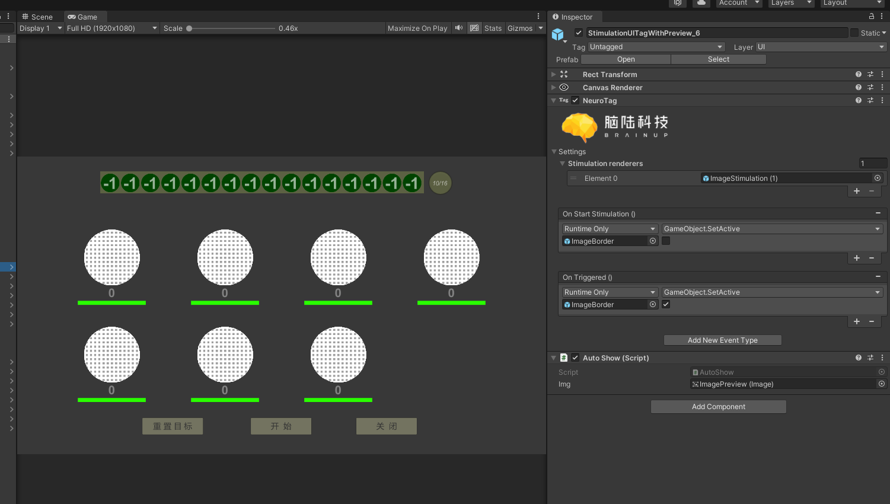在 NeuroTag 组件中，有两个可以绑定的事件，一个是 OnStartStimulation，另一个是 OnTriggered。OnStartStimulation 是在闪烁开始时候触发，OnTriggered 是在目标别识别后触发。在演示场景中，我们用着两个事件来操作高亮边框。在触发某个目标时候，边框显示，在开始闪烁时候，我们隐藏高亮边框。
Windows 下可以直接在 Editor 环境(即 Unity 中)下运行。点击 Unity 播放按钮，可以预览效果。
技术合作：luojunwen@naolubrain.com
商务合作：yexiaochen@naolubrain.com